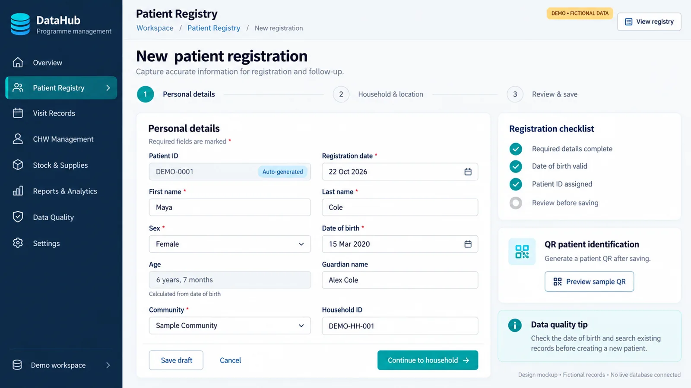

Data Management System
An 11-module system for tracking vaccine coverage and nutrition, designed to work for nurses in the field and managers in the office.
- PostgreSQL
- Flask
- PWA
- System design
- Documentation

The challenge
Tracking vaccine coverage and nutrition for individual patients across visits quickly outgrows spreadsheets. Nurses need a simple way to record visits in the field, and managers need reliable reports, reminders and a view of missed appointments.
What it covers
- Patient management
- Vaccine and nutrition tracking
- Appointments and reminders
- Missed appointment tracking
- Dashboards, graphs and reports
- Real-time notifications
- Role-based access for administrators and nurses
How the design evolved
| When | Decision |
|---|---|
| November 2024 | First scope: malaria vaccine coverage and nutrition tracking with admin and nurse roles |
| Early plan | SQL Server, ASP.NET Core, React and related tools |
| January 2025 | Database moved to PostgreSQL |
| Completed system | Flask backend with a progressive web app |
Why a progressive web app
A PWA installs on a phone like an app, opens quickly and can keep working when the signal is weak, then sync later. Nurses do not need app store downloads, and one codebase serves both phones and office computers.
- 1Nurse records visit on phone
- 2Saved locally if offline
- 3Syncs to PostgreSQL
- 4Reminders and missed visits calculated
- 5Manager dashboard updates
Documentation
I produced planning documents across several versions, covering the modules, roles and data model, so a developer or a team can build from them without guessing.
All design mockups
Sample data These screens show the design using invented, anonymised data. Real programme data stays with RHCI.